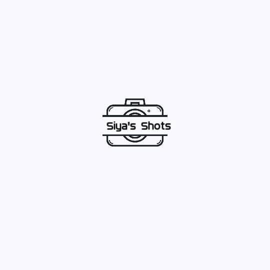

Web & UI
Interfaces designed to be responsive, clear and easy to navigate.
HTMLCSSJavaScriptTypeScriptReactNext.jsTailwind CSS
Based in South Africa · Open to opportunities
I'm Derrick Kapa — a software developer focused on web applications, mobile experiences and business systems. I enjoy taking a problem from a clear brief to a working, understandable solution.
01 / A little about me
I build applications that help people and organisations work more clearly — from public-facing websites to systems for managing data, users and everyday processes.
I'm completing a Diploma in Information Technology specialising in Software Development at IIE Rosebank College. I previously completed a Higher Certificate in Mobile Application and Web Development in 2024. My independent projects let me practise the full journey: understanding requirements, building interfaces, connecting data and refining the experience.
02 / Toolkit
A working toolkit developed through coursework, personal projects and practical software building.
Interfaces designed to be responsive, clear and easy to navigate.
Cross-platform app experiences and mobile-focused interaction patterns.
Connecting application workflows to structured data and external services.
Building, debugging and maintaining applications across projects.
Technologies vary by project. I keep learning and aim to describe implementation scope honestly.
03 / Selected work
A selection of public work and private projects I can discuss where access is appropriate.
Showing all projects
A lead management and lead-intelligence platform foundation for organising business leads and acquisition workflows. This is a private preview for review and testing, not production use; its temporary database may expire, so do not enter real client data.
Business website and installable PWA with a protected dashboard, role-based access, user profiles, company mail workflows and tender-related functionality.
A configurable education-platform project exploring institution administration and connected learning workflows.
A healthcare-management SaaS project exploring digital workflows for practitioners and medical practices. It requires independent security and readiness checks before real clinical use.
A parking and vehicle-management project exploring operational workflows, vehicle records and safety-related features.
An office-style web app concept with résumé and document workflows, templates, and optional AI-assisted suggestions.
A social application project exploring feeds, discovery and communication features across mobile-oriented experiences.
A React Native project focused on mobile UI, weather information and API-driven data.

A photography website built to present visual work and services through a simple online experience.
An educational C# application that explores security-awareness prompts, user interaction and input handling.
A web presence for a furniture, woodwork and upholstery business, built to communicate services and help customers discover the business.
A private business-operations system spanning lead workflows, client and staff administration, reporting, documents, finance-related modules and integration management.
A private online-store project for a solar-services business, intended to give customers a clear place to explore services and products.
04 / Learning journey
Formal study and independent projects work together to strengthen my software development practice.
Software Development · IIE Rosebank College
In progressMobile Application and Web Development · IIE Rosebank College
CompletedSelected module results from the first half of 2026.
05 / How I work
I value realistic scope, steady progress and solutions people can understand and maintain.
Understand the need. Agree on the problem, users, deadline and success criteria.
Build in steps. Keep work reviewable and raise blockers early.
Handover responsibly. Document what is delivered and protect private data and credentials.
06 / Contact
I welcome conversations about junior developer roles, internships, software projects and collaborations.